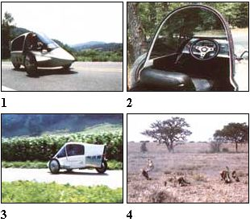

STAFF PHOTOS (CHEETAH PHOTOS BY GEORGE AND LORY FRAME)
[1] The canopy can be left open or shut ... to suit the driver's fancy. [2] Tandem seating was used to reduce frontal area, and thus wind resistance. [3 & 4] The correlation between the 3VG's cambering feature and the agility of these East African cheetahs isn't as farfetched as it may seem: To negotiate sudden corners at high speeds, both maintain stability by leaning into the turn, thus moving their centers of mass away from the point of ground contact and relying on gravity to counter centrifugal force.